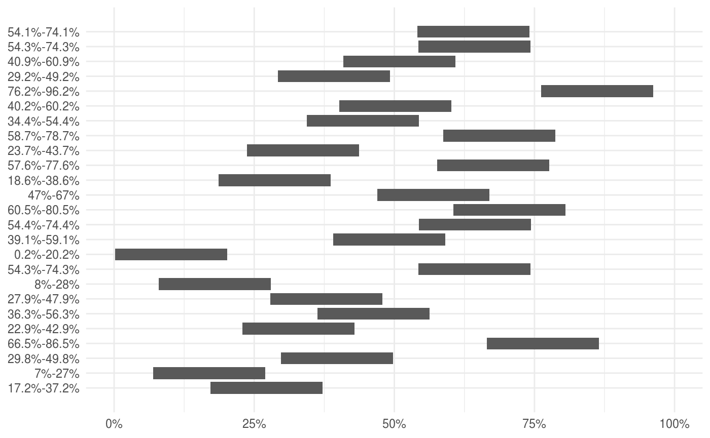

The goal of percentify is to create virtual groups on top of a tibble or grouped_df to allow calculation within percentile ranges of a variable on the whole dataset. You can then efficiently perform various dplyr operations on this resampled_df, like: summarise(), do() and group_map().
Example
Imagine we want to do some summary statistics at the different percentile ranges of price in diamonds. We start by using percentify_cut to created a percentiled_df on price with splits at 20%, 60%, 80%, 90% and 95%.
diamonds_price <- percentify_cut(diamonds, price, c(0.2, 0.6, 0.8, 0.9, 0.95))
diamonds_price
#> # A tibble: 53,940 x 10
#> # Groups: .percentile_price [6]
#> carat cut color clarity depth table price x y z
#> <dbl> <ord> <ord> <ord> <dbl> <dbl> <int> <dbl> <dbl> <dbl>
#> 1 0.23 Ideal E SI2 61.5 55 326 3.95 3.98 2.43
#> 2 0.21 Premium E SI1 59.8 61 326 3.89 3.84 2.31
#> 3 0.23 Good E VS1 56.9 65 327 4.05 4.07 2.31
#> 4 0.290 Premium I VS2 62.4 58 334 4.2 4.23 2.63
#> 5 0.31 Good J SI2 63.3 58 335 4.34 4.35 2.75
#> 6 0.24 Very Good J VVS2 62.8 57 336 3.94 3.96 2.48
#> 7 0.24 Very Good I VVS1 62.3 57 336 3.95 3.98 2.47
#> 8 0.26 Very Good H SI1 61.9 55 337 4.07 4.11 2.53
#> 9 0.22 Fair E VS2 65.1 61 337 3.87 3.78 2.49
#> 10 0.23 Very Good H VS1 59.4 61 338 4 4.05 2.39
#> # … with 53,930 more rowsWe can then use this grouped data.frame with summarise to calculate statistics within each range.
summarise(diamonds_price,
mean_carat = mean(carat),
procent_ideal = mean(cut == "Ideal"),
mean_x = mean(x),
n_obs = n())
#> # A tibble: 6 x 5
#> .percentile_price mean_carat procent_ideal mean_x n_obs
#> <chr> <dbl> <dbl> <dbl> <int>
#> 1 0%-20% 0.324 0.443 4.40 10796
#> 2 20%-60% 0.566 0.462 5.26 21586
#> 3 60%-80% 1.03 0.281 6.46 10793
#> 4 80%-90% 1.27 0.362 6.91 5395
#> 5 90%-95% 1.56 0.362 7.40 2699
#> 6 95%-100% 1.91 0.317 7.91 2697Using collect from dplyr will materialize the groups so they can be used for plotting or other calculations.
PLotting function
The resulting grouped data.frame have ggplot2::autoplot() methods to vizualize the the percentile ranges.

Inspiration
The underlying code for this package is inspired by the work done by Davis Vaughan in strapgod.
Code of Conduct
Please note that the ‘quansum’ project is released with a Contributor Code of Conduct. By contributing to this project, you agree to abide by its terms.